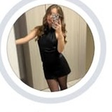

Rebecca Bungau
14post
1682follower
827seguiti
What’s meant to be, will be
@re.ginadicuori
Vedi traduzione
@re.ginadicuori
Vedi traduzione
Account seguito da lucamoriani,
joaquin.mtt e altri 58
joaquin.mtt e altri 58
Dolomites

Corfù
♡
Italy
Nessun post nell’anteprima
Apri il menu in alto a destra e aggiungi una foto.